library(tidyverse)
library(patchwork)Design importa
Gráfico bom x Gráfico ruim
https://r-graph-gallery.com/best-dataviz-packages.html
https://datavizproject.com
Tipos de dados
Ranking
https://www.kaggle.com/datasets/mylesoneill/world-university-rankings
dados <- read.csv("cwurData.csv")
str(dados)'data.frame': 2200 obs. of 14 variables:
$ world_rank : int 1 2 3 4 5 6 7 8 9 10 ...
$ institution : chr "Harvard University" "Massachusetts Institute of Technology" "Stanford University" "University of Cambridge" ...
$ country : chr "USA" "USA" "USA" "United Kingdom" ...
$ national_rank : int 1 2 3 1 4 5 2 6 7 8 ...
$ quality_of_education: int 7 9 17 10 2 8 13 14 23 16 ...
$ alumni_employment : int 9 17 11 24 29 14 28 31 21 52 ...
$ quality_of_faculty : int 1 3 5 4 7 2 9 12 10 6 ...
$ publications : int 1 12 4 16 37 53 15 14 13 6 ...
$ influence : int 1 4 2 16 22 33 13 6 12 5 ...
$ citations : int 1 4 2 11 22 26 19 15 14 3 ...
$ broad_impact : int NA NA NA NA NA NA NA NA NA NA ...
$ patents : int 5 1 15 50 18 101 26 66 5 16 ...
$ score : num 100 91.7 89.5 86.2 85.2 ...
$ year : int 2012 2012 2012 2012 2012 2012 2012 2012 2012 2012 ...dados$world_rank <- as.factor(dados$world_rank)
dados$institution <- as.factor(dados$institution)
dados$country <- as.factor(dados$country)
dados$national_rank <- as.factor(dados$national_rank)
dados$abbr <- c("Harvard", "MIT", "Stanford", "Cambridge", "Caltech",
"Princeton", "Oxford", "Yale", "Columbia", "UC Berkeley")
top <- dados %>%
slice(1:10) %>%
mutate(abbr = reorder(abbr, -score))
(g1 <- ggplot(top, aes(x = abbr, y = score)) +
geom_col(fill = "lightblue", color = "black") +
labs(x = "Instituição", y = "Score", title = "10 MELHORES UNIVERSIDADES DO MUNDO") +
theme_minimal() +
theme(
plot.title = element_text(hjust = 0.5),
axis.text.x = element_text(angle = 45, hjust = 1, vjust = 1)
))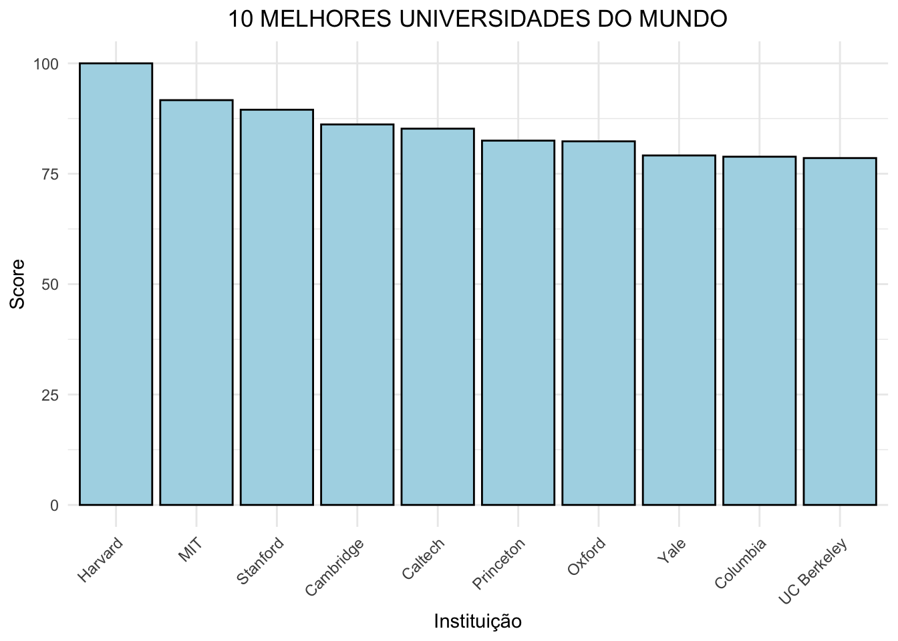
(g2 <- ggplot(top, aes(x = abbr, y = score, fill = abbr)) +
geom_col() +
labs(x = " ", y = "Score", title = "10 MELHORES UNIVERSIDADES DO MUNDO",
fill = "Instituição") +
theme_minimal() +
theme(
plot.title = element_text(hjust = 0.5),
axis.text.x = element_blank()
))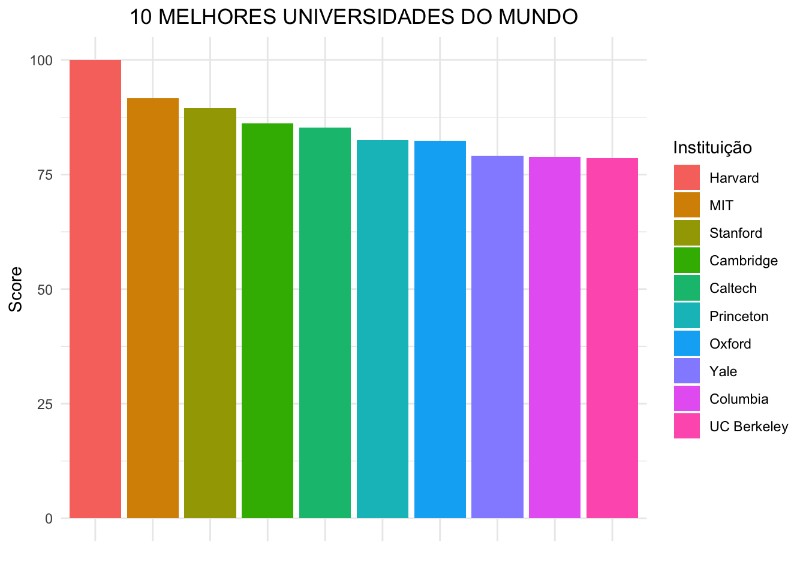
(g3 <- ggplot(top, aes(x = reorder(abbr, score), y = score)) +
geom_col(fill = "lightblue", color = "black") +
labs(x = "Instituição", y = "Score", title = "10 MELHORES UNIVERSIDADES DO MUNDO") +
theme_minimal() +
theme(
plot.title = element_text(hjust = 0.5),
axis.text.x = element_text(angle = 45, hjust = 1, vjust = 1)
) +
coord_flip())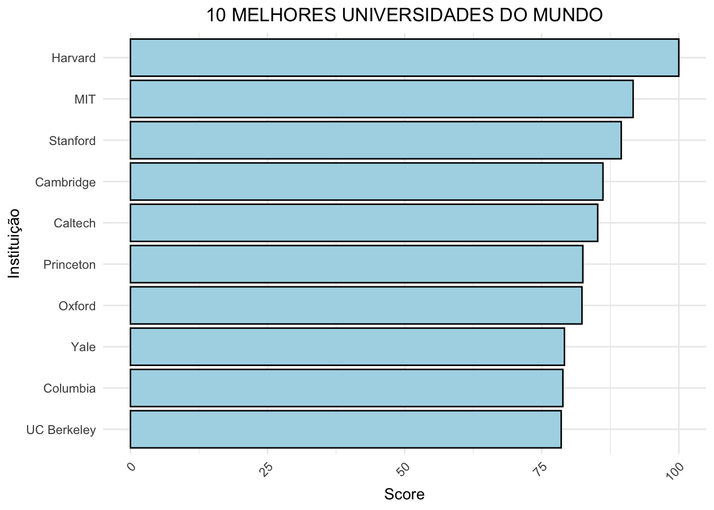
(g4 <- ggplot(top, aes(x = reorder(abbr, score), y = score, fill = abbr)) +
geom_col() +
geom_text(aes(label = score), hjust = -0.1) +
labs(x = "Instituição", y = "Score", title = "10 MELHORES UNIVERSIDADES DO MUNDO") +
viridis::scale_fill_viridis(option = "C", discrete = TRUE) +
theme_minimal() +
theme(
plot.title = element_text(hjust = 0.5),
axis.text.x = element_blank(),
axis.ticks.x = element_blank(),
legend.position = "none"
) +
coord_flip())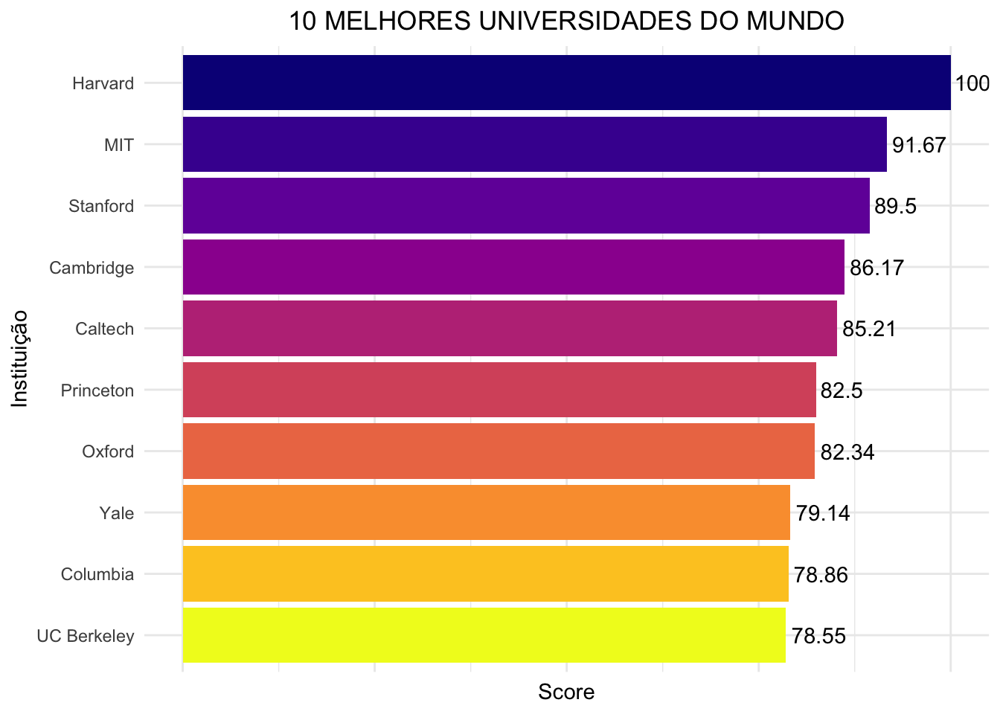
g1 + g2 + g3 + g4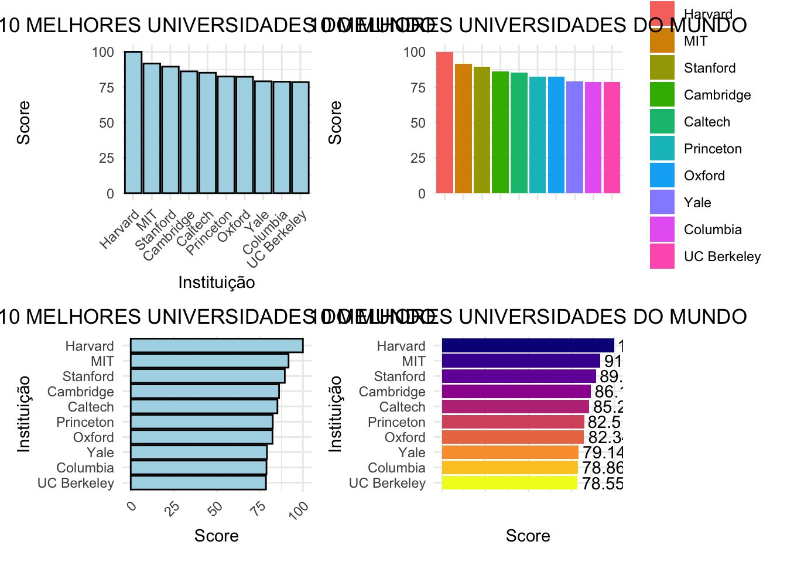
Tempo
https://www.kaggle.com/search?q=vendas+in%3Adatasets
dados <- read.csv("vendas_loja_seminovos.csv", sep = ";")
str(dados)
dados$Estado <- as.factor(dados$Estado)
dados$Marca <- as.factor(dados$Marca)
dados$Modelo <- as.factor(dados$Modelo)
dados$Cor <- as.factor(dados$Cor)
dados$Ano_fabricacao <- as.factor(dados$Ano_fabricacao)
library(tidyverse)
df_resumo <- dados %>%
filter(Marca %in% c("Chevrolet", "Fiat", "Volkswagen", "Toyota", "Hyundai"))
group_by(Ano_fabricacao) %>%
summarise(Count = n())
(g1 <- ggplot(df_resumo, aes(x = reorder(Ano_fabricacao, -Count), y = Count, fill = Ano_fabricacao)) +
geom_bar(stat = 'identity') +
scale_fill_brewer(palette = "Set3") +
labs(title = 'Quantidade de carros vendidos por ano de fabricação', x = ' ', y = 'Quantidade', fill = "Ano") +
theme_minimal() +
theme(plot.title = element_text(hjust = 0.5),
legend.position = "none"))
(g2 <- ggplot(df_resumo, aes(x = Ano_fabricacao, y = Count, fill = Ano_fabricacao)) +
geom_bar(stat = 'identity') +
scale_fill_brewer(palette = "Set3") +
labs(title = 'Quantidade de carros vendidos por ano de fabricação', x = ' ', y = 'Quantidade', fill = "Ano") +
theme_minimal() +
theme(plot.title = element_text(hjust = 0.5),
legend.position = "none"))
g1 + g2df_resumo <- dados %>%
group_by(Marca, Estado) %>%
summarise(Count = n()) %>%
filter(Estado %in% c("RJ", "SP", "MG", "BA", "GO", "MT")) %>%
filter(Marca %in% c("Chevrolet", "Fiat", "Volkswagen", "Toyota", "Hyundai"))
(g1 <- ggplot(df_resumo, aes(x = reorder(Estado, -Count), y = Count, fill = Marca)) +
geom_bar(stat = 'identity') +
labs(title = 'Quantidade de carros vendidos por Estado', x = ' ', y = 'Quantidade') +
theme_minimal() +
theme(plot.title = element_text(hjust = 0.5)))
(g2 <- ggplot(df_resumo, aes(x = reorder(Estado, -Count), y = Count, fill = Marca)) +
geom_bar(stat = 'identity', position = position_dodge()) +
labs(title = 'Quantidade de carros vendidos por Estado', x = ' ', y = 'Quantidade') +
theme_minimal() +
theme(plot.title = element_text(hjust = 0.5)))
g1 + g2
# somar coisas que nao fazem sentido serem somadas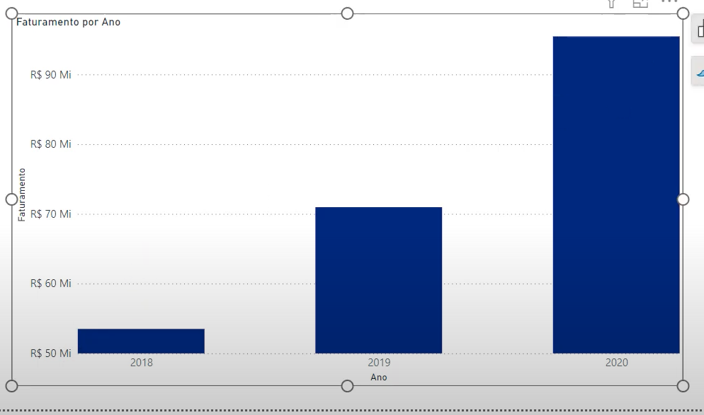
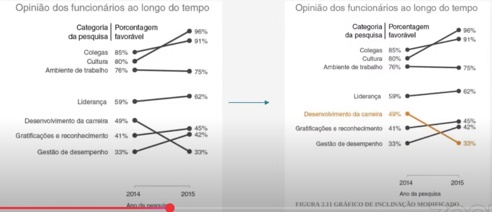
Os estudos de psicologia de design são amplamente aplicados em visualização de dados, pois trazem informações de como o ser humano processa informações, permitindo desenvolver técnicas para atuar sobre a percepção.
No início do século XX, psicólogos alemães desenvolveram os princípios de Gestalt. Trata-se de um conjunto de leis que explicam como percebemos e organizamos visualmente a informação. Esses princípios ajudam a entender porque certas informações se destacam ou passam despercebidas em uma visualização.
Os princípios que mais se destacam no contexto de visualização de dados são:
Proximidade
Entidades visuais que estão próximas umas das outras, são percebidas como um grupo ou unidade. O espaço em branco pode ser usado para agrupar elementos e separar outros. Proximidade espacial ou temporal de elementos induz a mente a percebê-los coletivamente. Exemplo: Em um gráfico de barras que mostra a comparação entre diferentes categorias de vendas, as barras que representam dados relacionados (por exemplo, vendas por região) podem ser agrupadas próximas umas das outras. Isso ajuda o visualizador a perceber que essas categorias estão relacionadas, em vez de ver cada barra como um elemento isolado;
library(tidyverse)
set.seed(1)
dados <- data.frame(
categoria = rep(c("Norte","Sul","Leste","Oeste"), each = 3),
subcat = rep(c("A","B","C"), times = 4),
valor = round(runif(12, 10, 100), 0)
)
ggplot(dados, aes(x=subcat, y=valor, fill=categoria)) +
geom_col(position=position_dodge(width=0.8)) +
facet_wrap(~categoria, scales="free_x") +
labs(title="Proximidade: Agrupando barras próximas por região")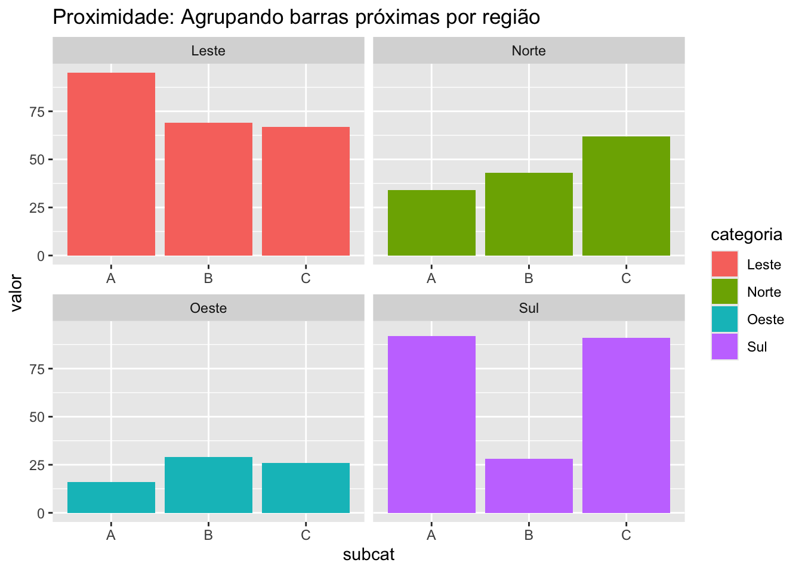
Boa Continuidade
Traços contínuos são percebidos mais prontamente do que contornos que mudem de direção rapidamente. Exemplo: Em um gráfico de linha mostrando a tendência de crescimento de vendas ao longo do tempo, é melhor usar uma linha contínua sem interrupções bruscas. Isso facilita a percepção de uma tendência contínua e evita confusão ao interpretar os dados;
tempo <- data.frame(
ano = 2015:2024,
vendas = cumsum(runif(10, 50, 150))
)
ggplot(tempo, aes(x=ano, y=vendas)) +
geom_line(size=1.2, color="blue") +
geom_point() +
labs(title="Boa Continuidade: Linha contínua reforça a tendência")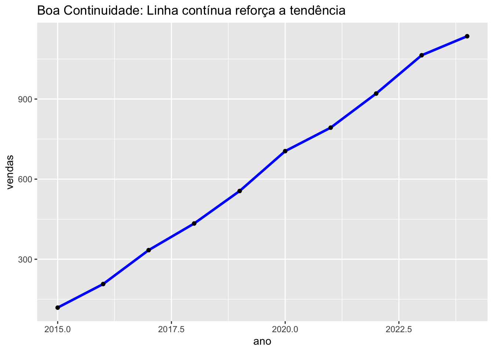
Similaridade
Objetos semelhantes são percebidos como um grupo. A mente agrupa elementos similares em entidades coletivas, esta similaridade pode ser baseada em forma, cores, tamanho brilho ou outra característica física dos objetos. Exemplo: Em um gráfico de dispersão, pontos com a mesma cor ou forma podem ser usados para representar dados de uma mesma categoria ou grupo. Por exemplo, diferentes cores podem indicar diferentes tipos de produtos, permitindo que o visualizador identifique rapidamente quais pontos pertencem a cada categoria;
disp <- data.frame(
x = rnorm(100),
y = rnorm(100),
grupo = rep(c("Produto A","Produto B"), each=50)
)
ggplot(disp, aes(x=x, y=y, color=grupo)) +
geom_point(size=3) +
labs(title="Similaridade: Cor usada para indicar categorias")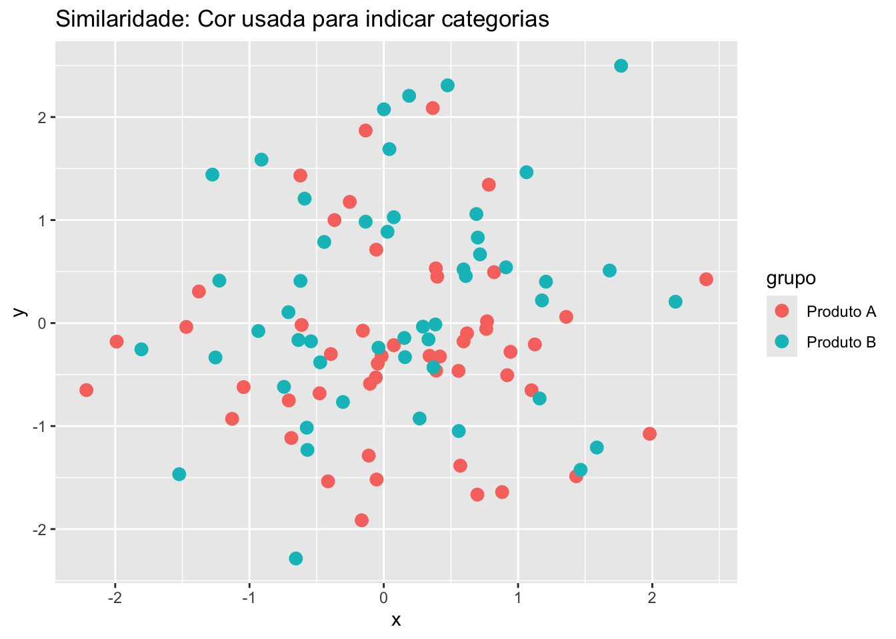
Fecho
A mente tende a fechar contornos para completar figuras regulares, completando as ‘falhas’ e aumentando a regularidade. Esse conceito nos permite concluir que não precisamos de áreas sombreadas ou bordas para que a informação de um gráfico aparente estar completa, por exemplo. Exemplo: Em uma visualização de rede onde os pontos representam diferentes entidades e as linhas representam conexões, usar bordas ou linhas para completar as conexões visíveis pode ajudar a formar uma imagem clara das relações entre as entidades, mesmo que algumas conexões não estejam completamente visíveis;
rede <- data.frame( x=c(1,2,2,1), y=c(1,1,2,2), grupo=c(1,2,3,4) )
ggplot(rede, aes(x,y)) + geom_point(size=5) + geom_path(aes(group=1), linetype="dashed") + labs(title="Fecho: A mente completa a figura mesmo sem todas as conexões")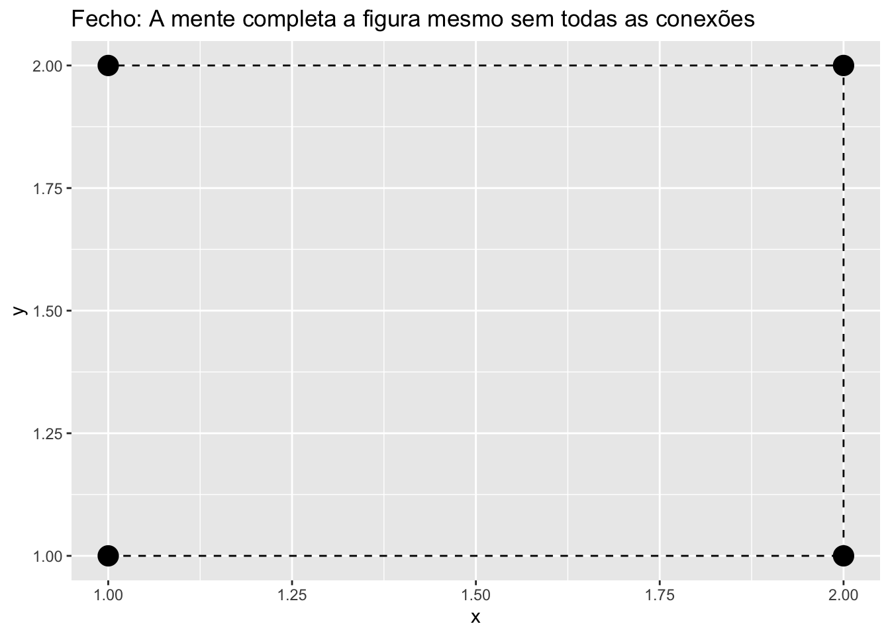
Região Comum ou Acercamento
Objetos dentro de uma região especial confinada, são percebidos como um grupo. Exemplo: Em um mapa de calor que mostra a intensidade de atividade em diferentes áreas, áreas com cores semelhantes podem ser usadas para representar zonas com níveis semelhantes de atividade. Isso ajuda a agrupar visualmente áreas com dados similares e facilita a interpretação dos padrões de intensidade;
heat <- expand.grid(x=1:5, y=1:5)
heat$valor <- runif(25, 0, 100)
ggplot(heat, aes(x,y, fill=valor)) +
geom_tile(color="white") +
scale_fill_viridis_c() +
labs(title="Região Comum: Cores agrupam zonas de intensidade")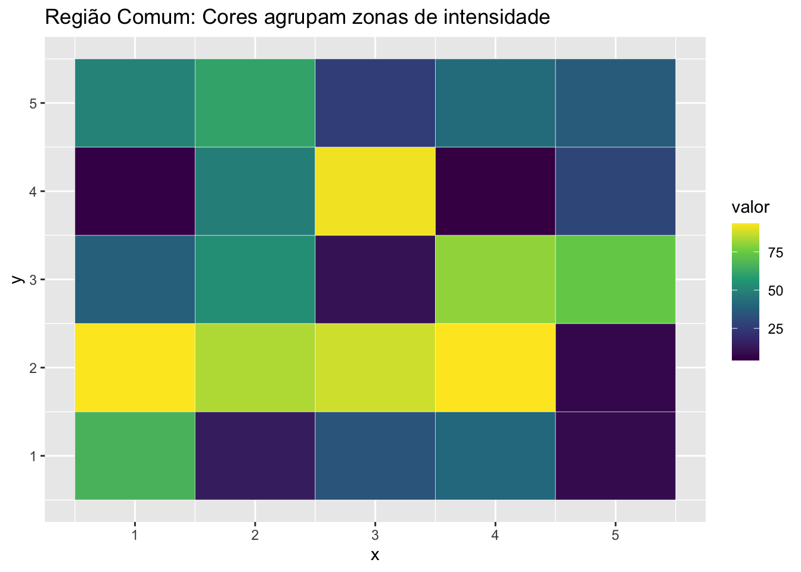
Conectividade
Objetos conectados por traços contínuos são percebidos como relacionamentos, pois o cérebro forma uma associação mais rapidamente quando há uma linha conectando pontos de dados, por exemplo. Esta propriedade possui, normalmente, um valor associativo mais forte do que cor, tamanho ou forma similar. Exemplo: Em um gráfico de rede, usar linhas contínuas para conectar pontos de dados pode ajudar a ilustrar as relações entre diferentes entidades, como as conexões entre amigos em uma rede social. A conectividade visual reforça a percepção das relações e associações;
library(igraph)
library(dplyr)
library(ggplot2)
# Criar um grafo em forma de anel
g <- make_ring(6)
# Extrair as arestas corretamente
g_df <- igraph::as_data_frame(g, what = "edges")
# Criar coordenadas dos nós (num círculo)
nodes <- data.frame(
name = 1:6,
x = cos(1:6 * 2 * pi / 6),
y = sin(1:6 * 2 * pi / 6)
)
# Juntar arestas com coordenadas de origem e destino
edges <- g_df %>%
left_join(nodes, by = c("from" = "name")) %>%
rename(x = x, y = y) %>%
left_join(nodes, by = c("to" = "name"), suffix = c("", "_end")) %>%
rename(xend = x_end, yend = y_end)
# Plotar conectividade
ggplot() +
geom_segment(data = edges,
aes(x = x, y = y, xend = xend, yend = yend),
color = "gray") +
geom_point(data = nodes, aes(x, y), size = 5, color = "blue") +
labs(title = "Conectividade: Linhas reforçam relações entre nós") +
theme_void()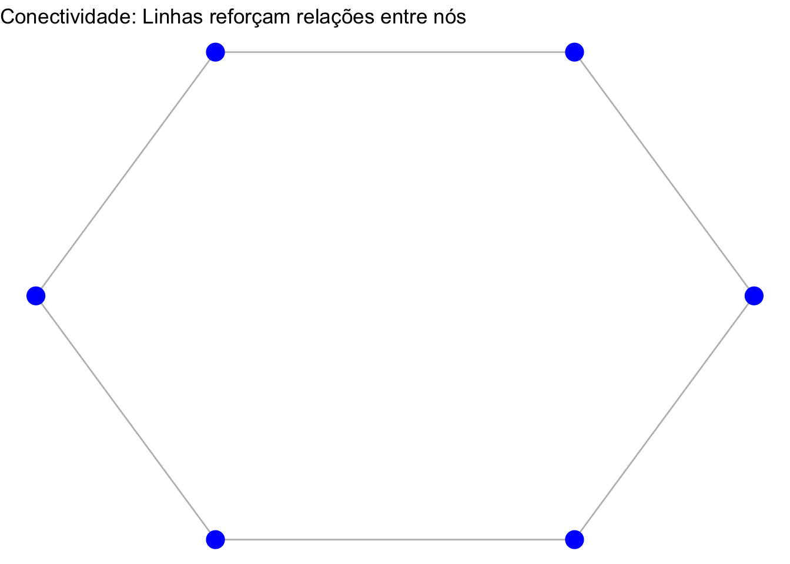
Pregnância
Também chamada de lei da simplicidade ou da boa forma, diz que há um melhor grau de assimilação de objetos quando eles são organizados de maneira mais simples, formando, assim, imagens mais equilibradas e harmoniosas. Exemplo: Em um painel de visualização de dados, simplificar os gráficos e minimizar o uso de elementos decorativos desnecessários pode ajudar a criar uma visualização que seja clara e direta. Usar formas e layouts simples ajuda a garantir que a informação seja assimilada de maneira rápida e eficiente;
ggplot(dados, aes(x=categoria, y=valor, fill=categoria)) +
geom_col() +
theme_minimal() +
theme(legend.position="none") +
labs(title="Pregnância: Visualização simples e clara")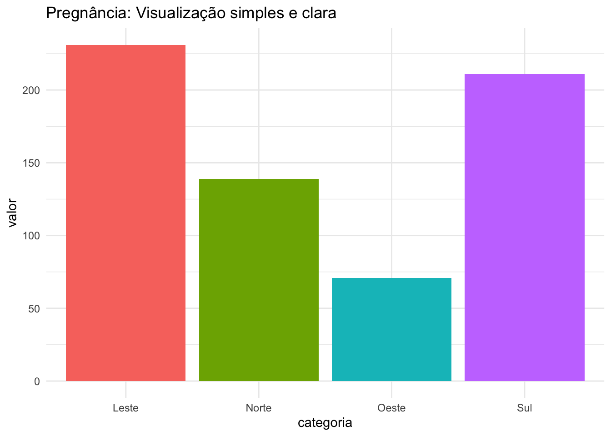
Experiências Passadas
Refere-se à experiência adquirida pelo usuário sobre determinado objeto em contatos anteriores e de que maneira isso pode ajudá-lo a reconhecer e interpretar algo quando esse objeto lhe for mostrado novamente. É um princípio bastante individual, pois as experiências dos indivíduos podem variar bastante. Exemplo: Se você está criando uma visualização de dados que usa gráficos de barras, e seu público está acostumado a ver gráficos de barras em relatórios, manter esse formato ajudará o público a interpretar rapidamente a informação, com base em suas experiências anteriores;
ggplot(dados, aes(x=categoria, y=valor, fill=categoria)) +
geom_col() +
labs(title="Experiências Passadas: Uso de gráfico de barras familiar")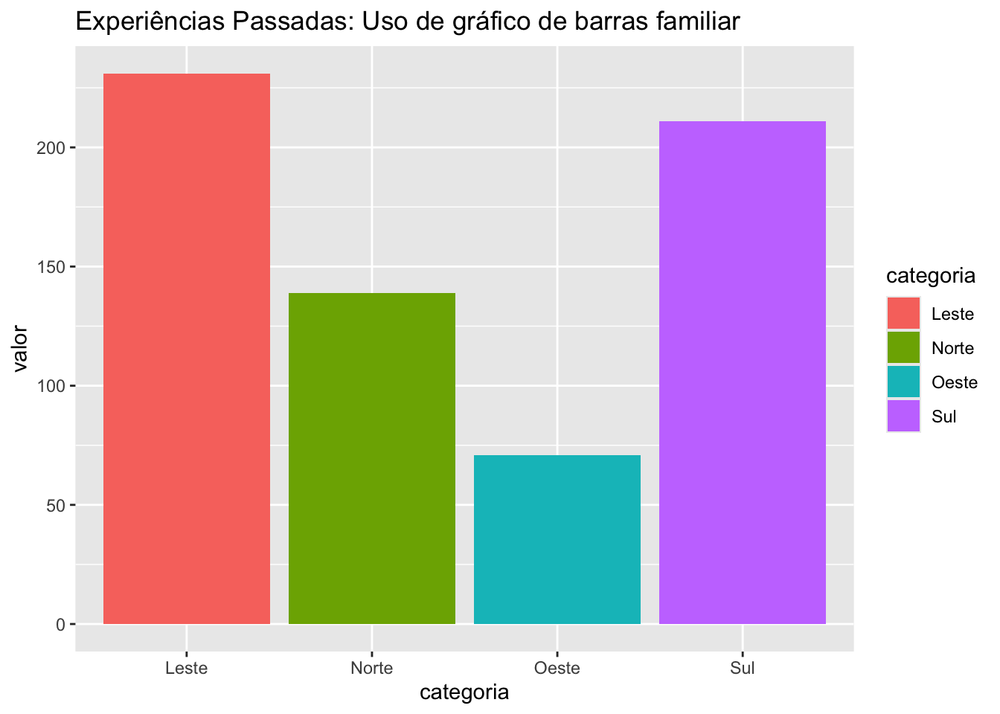
Similaridade: Objetos semelhantes são agrupados e percebidos como uma unidade.
- Aplicação no Design: Utilize cores, formas e texturas semelhantes para agrupar elementos e criar hierarquia visual.
Continuidade: Nossa mente tende a perceber formas contínuas e completar padrões incompletos.
- Aplicação no Design: Utilize linhas e curvas para guiar o olhar do usuário e criar uma sensação de fluxo.
Proximidade: Elementos próximos uns aos outros tendem a ser percebidos como um grupo.
- Aplicação no Design: Agrupe elementos relacionados para criar unidades visuais e facilitar a compreensão.
Fechamento: Temos a tendência de fechar ou completar formas e figuras incompletas.
- Aplicação no Design: Utilize formas incompletas para despertar a curiosidade e engajar o público.
Pregnância: Nossa percepção busca a forma mais simples e clara possível.
- Aplicação no Design: Crie designs limpos, objetivos e fáceis de entender.
Simetria e Ordem: É a tendência de perceber formas e padrões organizados e simétricos.
- Aplicação no Design: Utilize layouts simétricos e organizados para criar uma sensação de equilíbrio e harmonia.
Figura-Fundo: Percebemos uma figura em destaque em relação a um fundo mais neutro.
- Aplicação no Design: Utilize contraste e cores para destacar elementos importantes e criar hierarquia visual.
Ponto Focal: Elementos que se destacam em um conjunto atraem mais atenção.
- Aplicação no Design: Utilize cores, tamanhos e formas diferentes para destacar elementos importantes e guiar o olhar do usuário.
Os princípios de Gestalt oferecem uma base sólida para a criação de visualizações de dados que são não apenas informativas, mas também intuitivas e esteticamente agradáveis, guiando a percepção do público de maneira eficaz, destacando padrões e insights que poderiam passar despercebidos em representações visuais menos bem elaboradas.
library(ggplot2)
library(dplyr)
library(igraph)
set.seed(123)
### 1. PROXIMIDADE ----
dados <- data.frame(
regiao = rep(c("Norte","Sul","Leste","Oeste"), each=3),
categoria = rep(c("A","B","C"), times=4),
valor = round(runif(12, 10, 100), 0)
)
# Antes: barras todas misturadas
ggplot(dados, aes(x=categoria, y=valor, fill=regiao)) +
geom_col(position="dodge") +
labs(title="ANTES: Difícil ver relação por região")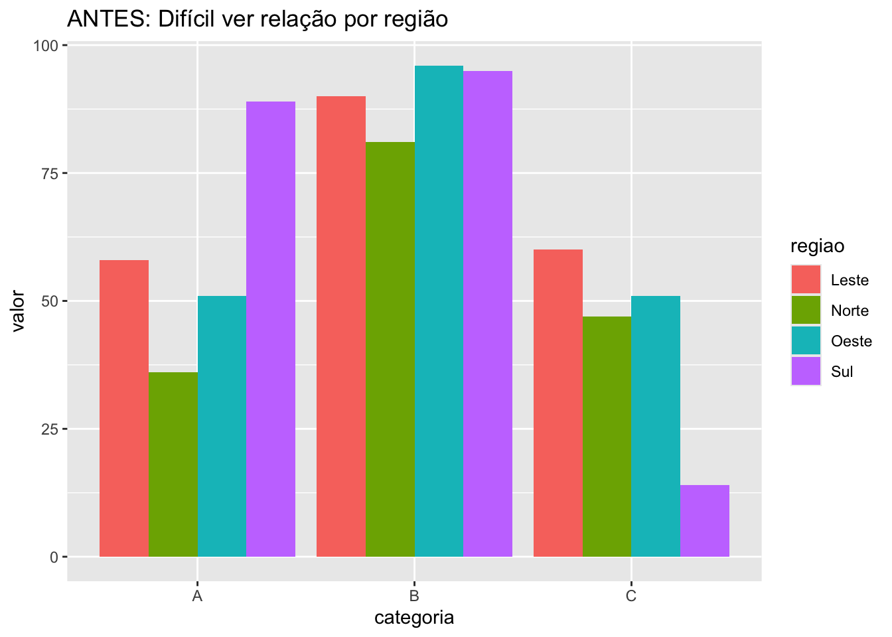
# Depois: agrupando por proximidade (facet por região)
ggplot(dados, aes(x=categoria, y=valor, fill=categoria)) +
geom_col() +
facet_wrap(~regiao) +
labs(title="DEPOIS: Proximidade destaca agrupamento por região")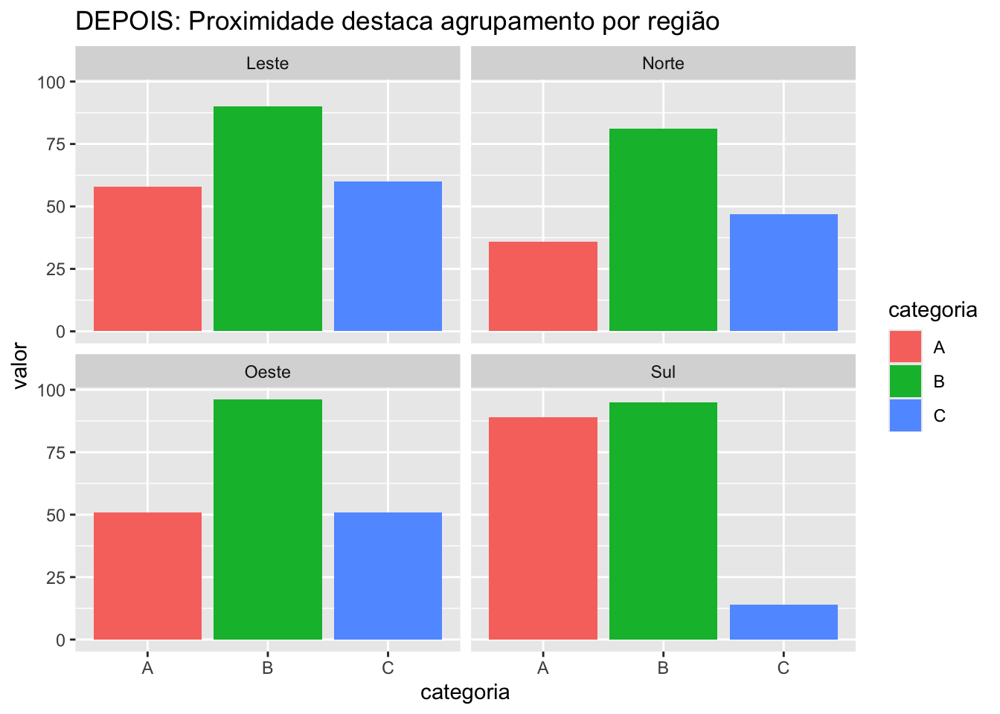
### 2. BOA CONTINUIDADE ----
tempo <- data.frame(
ano = 2015:2024,
vendas = cumsum(runif(10, 50, 150))
)
# Antes: pontos soltos
ggplot(tempo, aes(x=ano, y=vendas)) +
geom_point(size=3) +
labs(title="ANTES: Apenas pontos, difícil ver a tendência")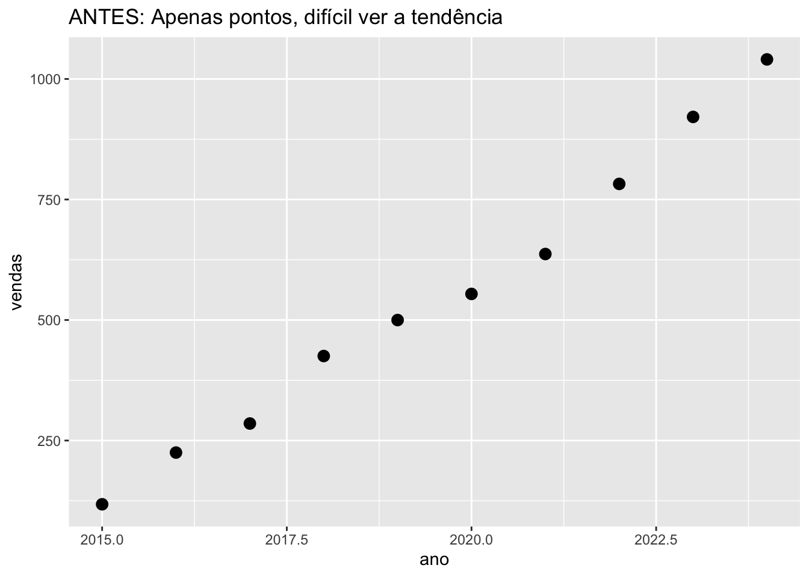
# Depois: linha contínua
ggplot(tempo, aes(x=ano, y=vendas)) +
geom_line(size=1.2, color="blue") +
geom_point() +
labs(title="DEPOIS: Linha contínua mostra a tendência claramente")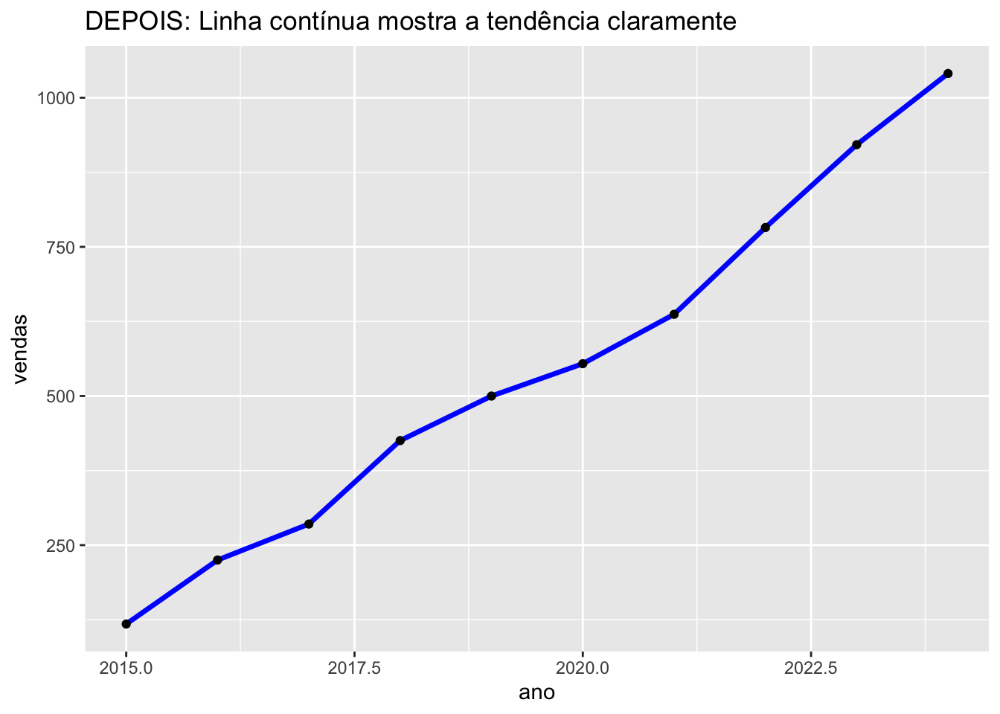
### 3. SIMILARIDADE ----
disp <- data.frame(
x = rnorm(100),
y = rnorm(100),
grupo = rep(c("Produto A","Produto B"), each=50)
)
# Antes: todos iguais
ggplot(disp, aes(x=x, y=y)) +
geom_point(size=3, color="gray") +
labs(title="ANTES: Não há distinção entre grupos")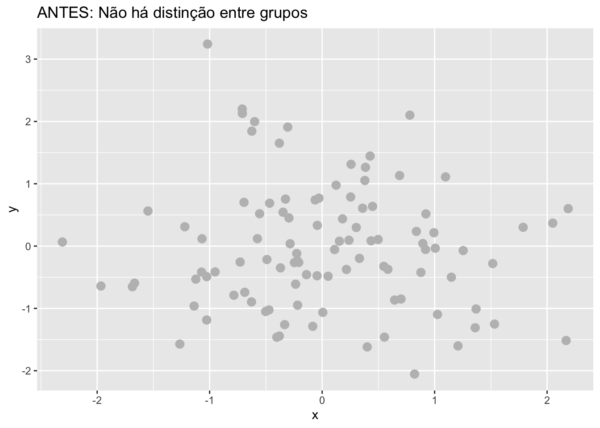
# Depois: cores diferentes indicam categorias
ggplot(disp, aes(x=x, y=y, color=grupo)) +
geom_point(size=3) +
labs(title="DEPOIS: Similaridade por cor destaca os grupos")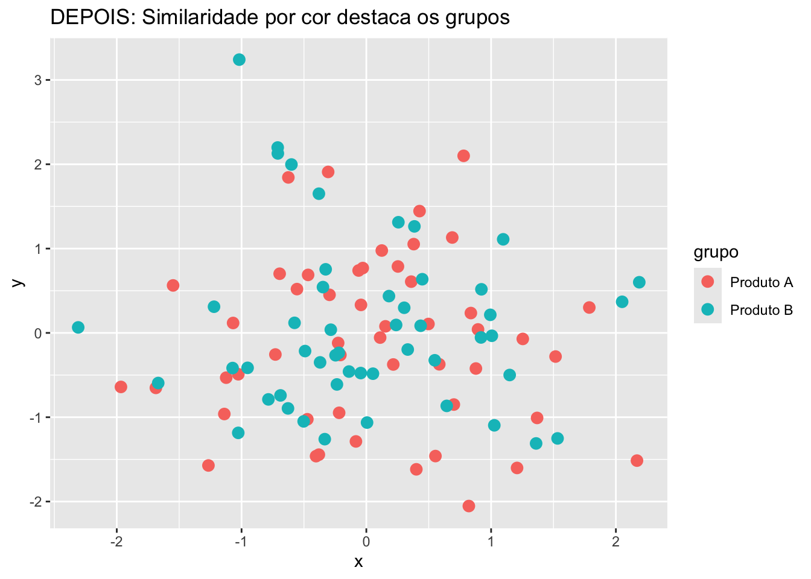
### 4. FECHO ----
rede <- data.frame(x=c(1,2,2,1), y=c(1,1,2,2))
# Antes: só pontos soltos
ggplot(rede, aes(x,y)) +
geom_point(size=5) +
labs(title="ANTES: Pontos sem relação clara")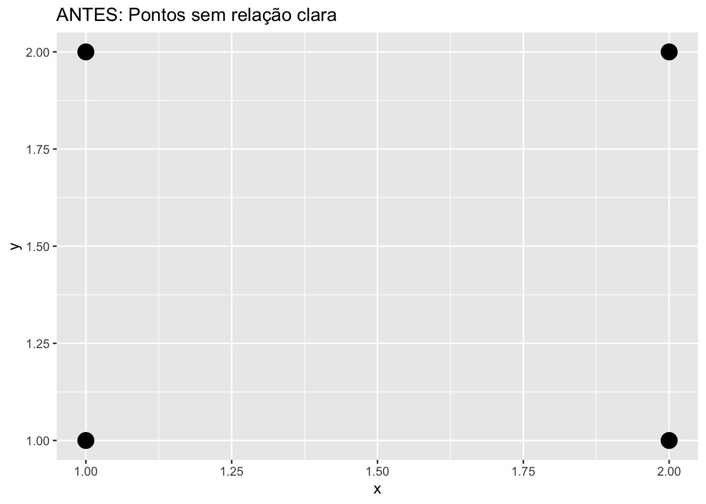
# Depois: tracejado conecta, formando figura implícita
ggplot(rede, aes(x,y)) +
geom_point(size=5) +
geom_path(linetype="dashed") +
labs(title="DEPOIS: A mente completa a figura (quadrado)")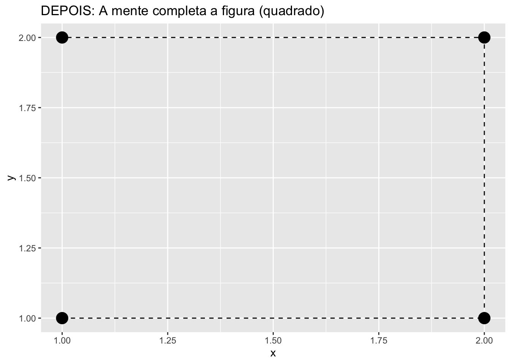
### 5. REGIÃO COMUM ----
heat <- expand.grid(x=1:5, y=1:5)
heat$valor <- runif(25, 0, 100)
# Antes: pontos isolados
ggplot(heat, aes(x,y, size=valor)) +
geom_point() +
labs(title="ANTES: Difícil perceber padrões de intensidade")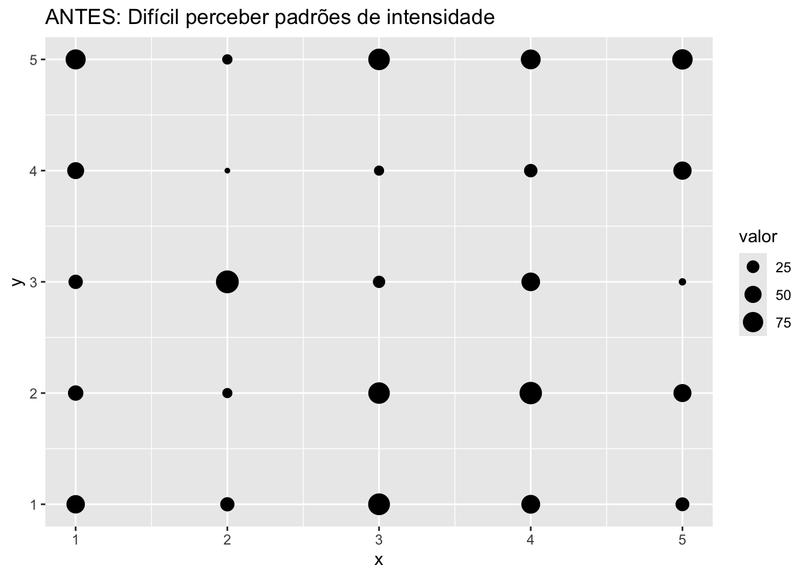
# Depois: mapa de calor (região comum de cor)
ggplot(heat, aes(x,y, fill=valor)) +
geom_tile(color="white") +
scale_fill_viridis_c() +
labs(title="DEPOIS: Região comum por cor facilita padrões")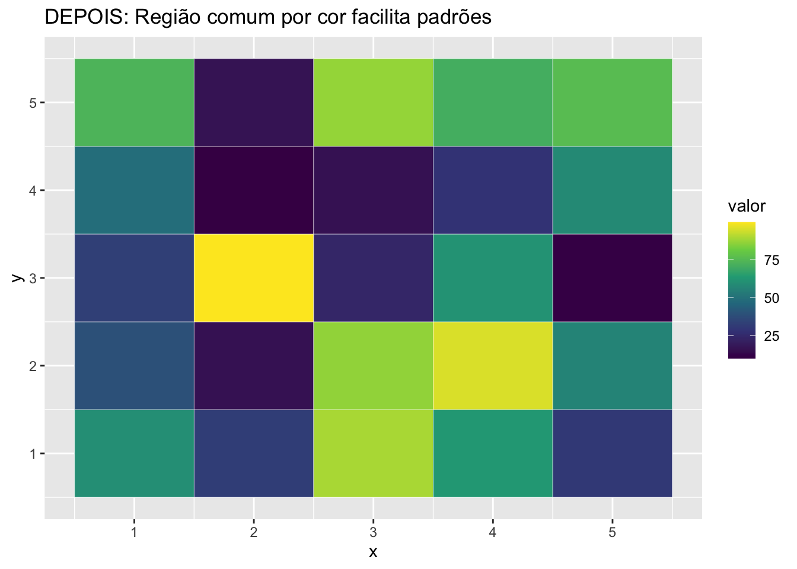
### 6. CONECTIVIDADE ----
g <- make_ring(6)
g_df <- as_data_frame(g, what = "edges")
nodes <- data.frame(
name=1:6,
x=cos(1:6 * 2*pi/6),
y=sin(1:6 * 2*pi/6)
)
edges <- g_df %>%
left_join(nodes, by=c("from"="name")) %>%
rename(x=x, y=y) %>%
left_join(nodes, by=c("to"="name"), suffix=c("", "_end")) %>%
rename(xend=x_end, yend=y_end)
# Antes: só pontos
ggplot(nodes, aes(x,y)) +
geom_point(size=5, color="blue") +
labs(title="ANTES: Apenas pontos sem relação clara") +
theme_void()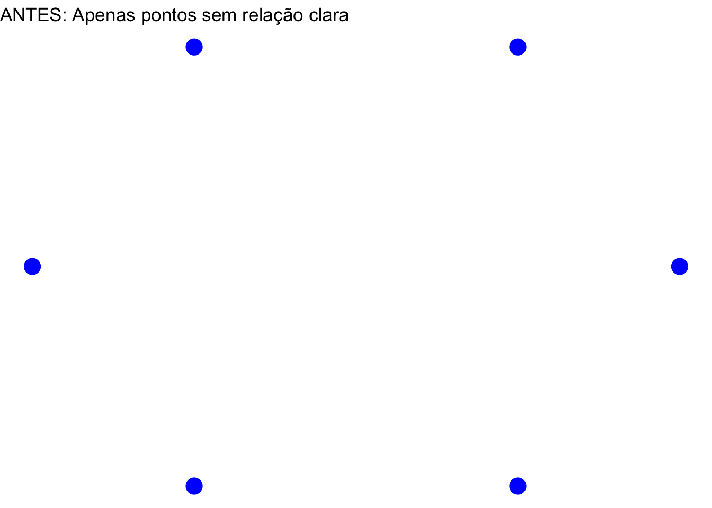
# Depois: conectividade com linhas
ggplot() +
geom_segment(data=edges, aes(x=x,y=y,xend=xend,yend=yend), color="gray") +
geom_point(data=nodes, aes(x,y), size=5, color="blue") +
labs(title="DEPOIS: Conectividade mostra relações") +
theme_void()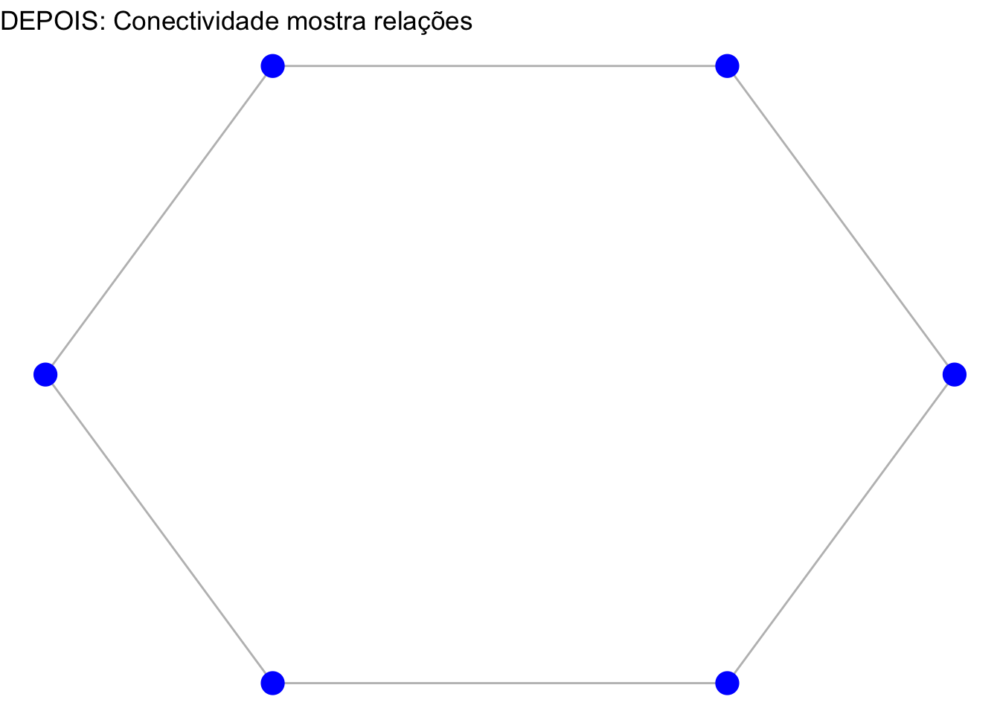
### 7. PREGNÂNCIA ----
# Antes: gráfico poluído
ggplot(dados, aes(x=regiao, y=valor, fill=regiao)) +
geom_col(color="black") +
theme_bw() +
labs(title="ANTES: Gráfico cheio de elementos visuais")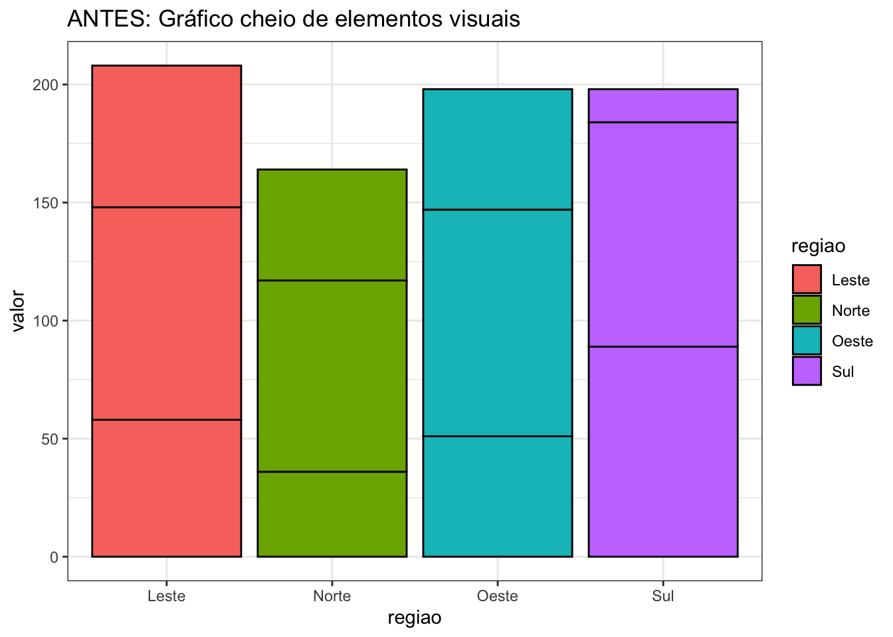
# Depois: visual simples e claro
ggplot(dados, aes(x=regiao, y=valor, fill=regiao)) +
geom_col() +
theme_minimal() +
theme(legend.position="none") +
labs(title="DEPOIS: Pregnância (simplicidade e clareza)")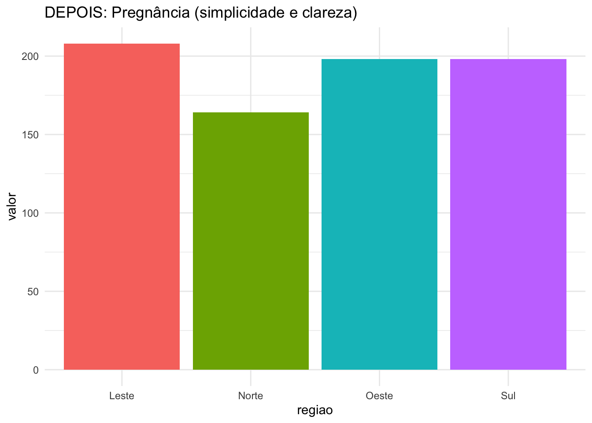
### 8. EXPERIÊNCIAS PASSADAS ----
# Antes: formato incomum (polar bar chart)
ggplot(dados, aes(x=regiao, y=valor, fill=regiao)) +
geom_col() +
coord_polar() +
labs(title="ANTES: Formato incomum, exige esforço de interpretação")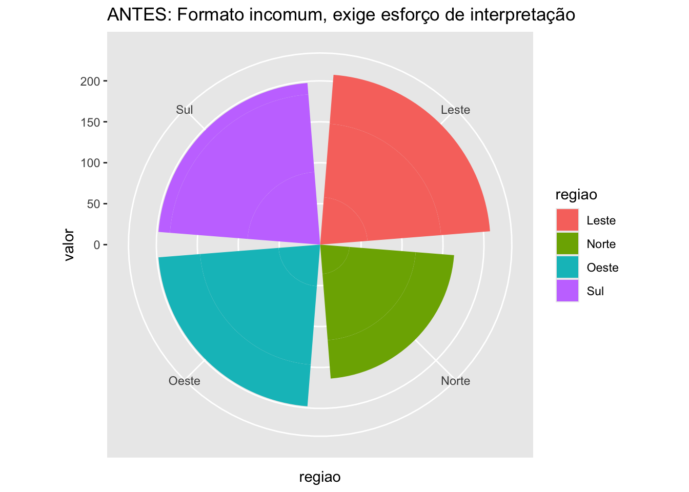
# Depois: gráfico de barras tradicional
ggplot(dados, aes(x=regiao, y=valor, fill=regiao)) +
geom_col() +
labs(title="DEPOIS: Gráfico de barras familiar (experiência passada)")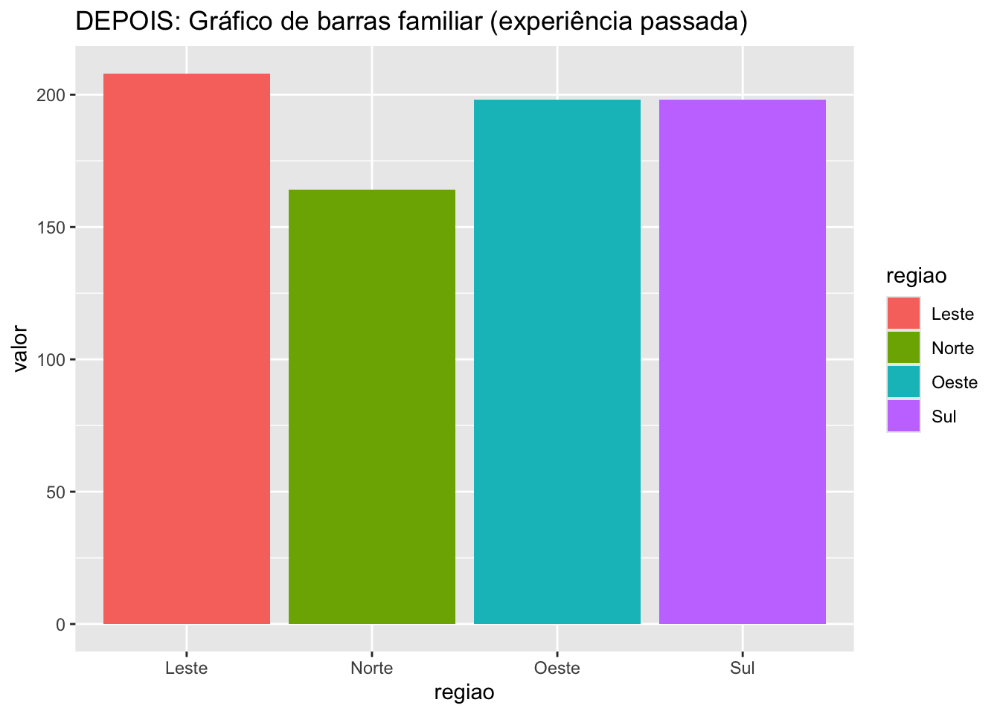